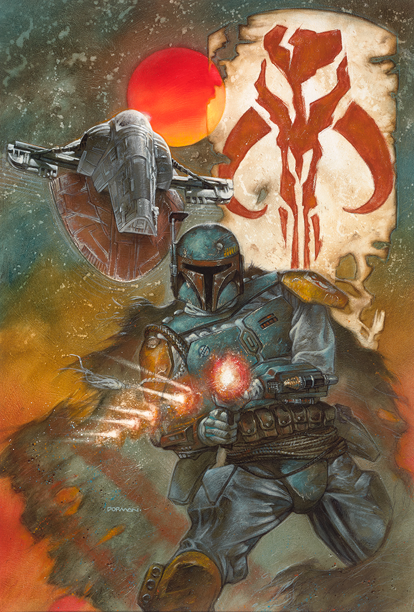

I know the link said "All Things Star Wars" but, I must admit, Mandalorians sit at the top of the Star Wars Universe. Prior to the Disney takeover, I studied Mandalorian history even more than my school subjects. From Mandalore the First, the Neo Crusaders war against Revan and the Old Republic, Jaster Mereel and his raising of Jango Fett, and Boba Fett's adventures. Even my main in Star Wars The Old Republic was a Bounty Hunter geared in Mandalorian armor. I dare say that even the most capable Mandalorian warrior would have had a fear factor to make Vader think twice.
